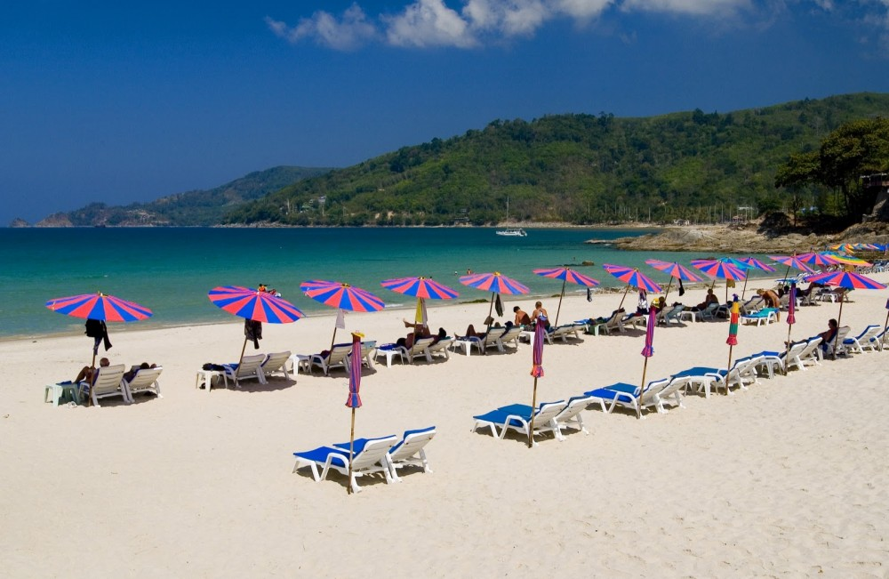
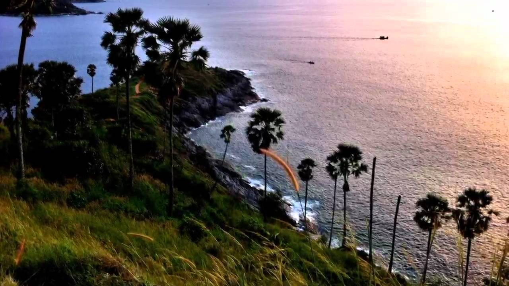

    </nav>
    <div class="container">

        <div class="row">

        <div class="row">
             <ol class="breadcrumb">

  <li><a href="index.html">Home</a></li>
  <li class="active">Traval</li>
</ol>
            <div class="box">
                <div class="col-lg-12">
                    <hr>
                    <h1 class="intro-text text-center">
                        <strong>Traval</strong>
                    </h1>
                    <hr>
                </div>
                <div class="col-lg-12 text-center">
                    
                    <h2>หาดป่าตอง ภูเก็ต
                        <br>
                        <small></small>
                    </h2>
                    <p>เป็นชายหาดที่มีชื้อเสียงมากที่สุดของเกาะภูเก็ต และยังเป็นสถานที่ผักผ่อนที่มีนักท่องเที่ยวชาวต่างชาติมาผักผ่อนตลอดทั้งปีอีกด้วย ภายในบริเวณมี่บ้านพัก โรงแรม บริษัทนำเที่ยว ร้านค้า ร้านอาหาร แหล่งบันเทิงยามค่ำคืนไว้สำหรับบริการนักท่องเที่ยว ที่อาจจะเรียกได้ว่า เป็นสถานที่ท่องเที่ยว 24 ชม. เลยก็ว่าได้ </p>

                    <a href="traval2.html" class="btn btn-default btn-lg">Read More</a>
                    <hr>
                </div>
                <div class="col-lg-12 text-center">
                    
                    <h2>แหลมพรหมเทพ
                        <br>
                        <small></small>
                    </h2>
                    <p>หากใครไปภูเก็ตแล้วไม่ได้มาชมอาทิตย์ตกที่ แหลมพรหมเทพ ถือว่ามาไม่ถึง แหลมพรหมเทพจัดเป็นหนึ่งในจุดชมอาทิตย์ตกก่อนใครที่สวยที่สุดในเมืองไทยเป็นจุดชมวิวที่สวยงามของภูเก็ตอยู่ห่างจากหาดราไวย์ ประมาณ 2 กิโลเมตร เป็นแหลมที่อยู่ตอนใต้สุดของเกาะภูเก็ต ชาวบ้านเรียกว่าแหลมเจ้า </p>
                    <a href="traval3.html" class="btn btn-default btn-lg">Read More</a>
                    <hr>
                </div>
                <div class="col-lg-12 text-center">
                    
                    <h2>ท้าวเทพกระษัตรี ท้าวศรีสุนทร สองวีรสตรีของชาติ
                        <br>
                        <small></small>
                    </h2>
                    <p> อนุสาวรีย์นี้ถูกสร้างขึ้นเมื่อปี พ.ศ. 2510 เป็นรูปปั้นรูปเหมือนของท้าวเทพกระษัตรี และท้าวศรีสุนทร ในชุดโจงกระเบน ใส่เสื้อแขนกระบอก มือถือดาบ ในท่าเตรียมพร้อมออกสู้รบกับทหารพม่า ในสมัยสงคราม 9 ทัพ
 รอบอนุสาวรีย์เป็นลานขนาดย่อม เพื่อสำหรับเป็นที่สักการะบูชา และมักพบผู้มากราบไหว้เกือบตลอด </p>
                    <a href="traval4.html " class="btn btn-default btn-lg">Read More</a>
                    <hr>
                </div>
                <div class="col-lg-12 text-center">
                    <ul class="pager">
                        <li class="previous"><a href="index.html">&larr; Older</a>
                        </li>
                        <li class="next"><a href="traval2.html">Newer &rarr;</a>
                        </li>
                    </ul>
                </div>
            </div>
        </div>


   <!-- /.container -->

    <footer>
        <div class="container">
            <div class="row">
                <div class="col-lg-12 text-center">
                    <p>Website 2016</p>
                </div>
            </div>
        </div>
    </footer>

    <!-- jQuery -->
    <script src="js/jquery.js"></script>

    <!-- Bootstrap Core JavaScript -->
    <script src="js/bootstrap.min.js"></script>

</body>

</html>
